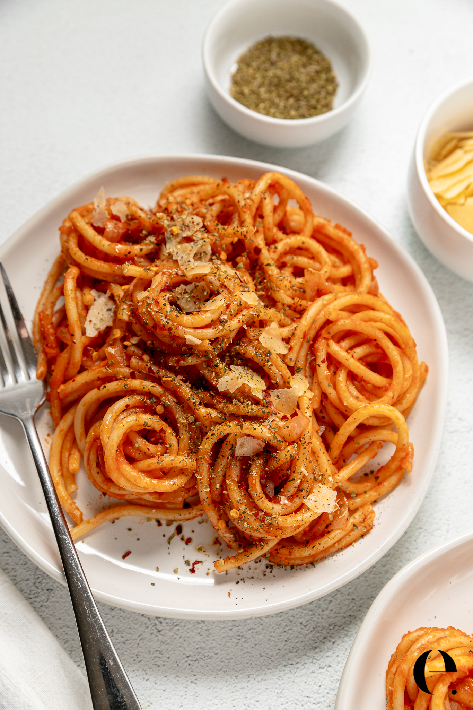

CARAMELISED ONION PASTA

Description
All you need for this caramelized onion pasta recipe is a bag of onions, a few cloves of garlic, some dried pasta, and a wedge of cheese. Slowly cooking the sliced onions in butter and olive oil coaxes out their natural sugars, turning them deeply golden, sweet, and almost jammy.
Pasta water and finely grated Parmesan do double duty here, adding seasoning and structure as they emulsify into a silky cream-free sauce. Finished with a squeeze of lemon and fresh parsley, this easy vegetarian pasta is proof that a luxurious dinner can come from the most basic pantry ingredients.
Ingredients
- 2 Tbsp. extra-virgin olive oil
- 2 Tbsp. unsalted butter
- 2 lb. sweet or yellow onions (about 4 large), thinly sliced
- 1 1/2 tsp. kosher salt
- 4 garlic cloves, finely chopped
- 8 oz. linguine or other long strand pasta
- 4 oz. Parmesan, finely grated (about 2 cups), plus more for serving
- ½ lemon
- ½ cup finely chopped parsley
Steps:
- Heat 2 Tbsp. extra-virgin olive oil and 2 Tbsp. unsalted butter in a medium Dutch oven or other heavy pot over medium until butter is melted. Add 2 lb. sweet or yellow onions (about 4 large), thinly sliced, a large pinch of kosher salt, and a large pinch of freshly ground black pepper; cook, stirring occasionally, until onions are very tender and deep golden brown, about 30 minutes.Add 4 garlic cloves, finely chopped, and cook, stirring, until fragrant, about 1 minute.
- Meanwhile, cook 8 oz. linguine or other long strand pasta in a large pot of boiling salted water, stirring occasionally, until very al dente, about 2 minutes less than package directions. Drain, reserving 1½ cups pasta cooking liquid.
- Add pasta and 1 cup pasta cooking liquid to onion mixture and stir to combine. Add a small handful from 4 oz. Parmesan, finely grated (about 2 cups), and stir until melted. Repeat with remaining cheese, adding a handful at a time and adding more pasta cooking liquid as needed until a glossy sauce forms and coats pasta. Squeeze in juice from ½ lemon to taste and stir in ½ cup finely chopped parsley. Taste and season with more pepper if needed.
- Divide pasta among shallow bowls and top with Parmesan and more pepper.
Thanks for reading and I hope you enjoy this recipe
Home